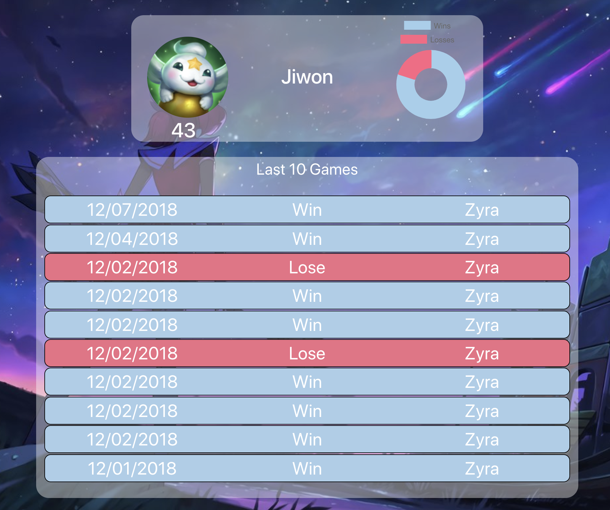
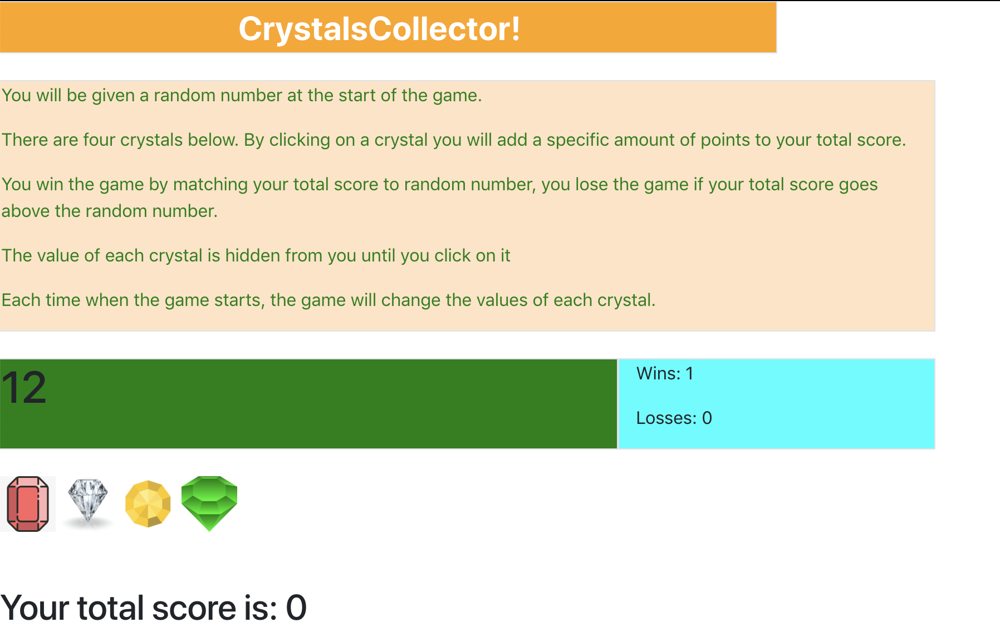
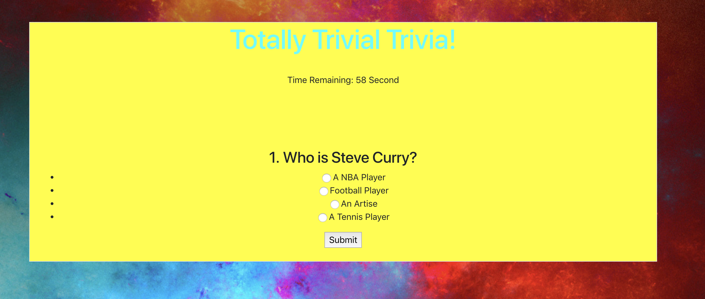

Project
Project-1

The aim of this project is to let the user being able to see the latest 10 League of Legend status, blue is won, red is lost. The first part contains the users icon, level, name and the win-lose data. We have used API ajax call method to grab the data from the server, with the color match, let the users won't be confused about their or their friend's status. Please visit the websit https://chadlee1592.github.io/LoL.gg/ or click here.
Crystal Game

This is the Crystal-Collector game that you will need to click the gems in order to match the number that has been given. If you matched the number, your win status will increase one, if you lost, the losses will increase one. The given number and the gems number are random each time to make sure the participants won't cheat on it. For more information, please visit the website https://tomlam0828.github.io/unit-4-game/ or click here.
Trivia Game

This is the trivia game that will give you 5 multiple choices quesitons to allow you to answer. It contains different fields such as sport, education, celebrity, and news. For more information or want to give a shot, please visit the website https://tomlam0828.github.io/TriviaGame/ or click here.